Submit sends the nine boxes of your VAT return to HMRC. You keep your records in your own spreadsheet, work out the boxes there, and enter the figures here. HMRC sends back a receipt with a Form Bundle Number.
What you need before you start
- Your VAT registration number.
- The figures for the nine boxes of the period, worked out in your spreadsheet.
- A Government Gateway user ID and password, to give Submit permission to send your returns to HMRC.
- A Google or Microsoft account to sign in to Submit.
The steps
-
Ask HMRC
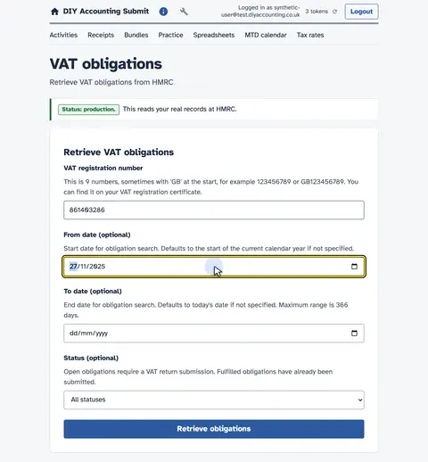
Type the VAT registration number. Then the stretch of time to look at.
-
The periods on file
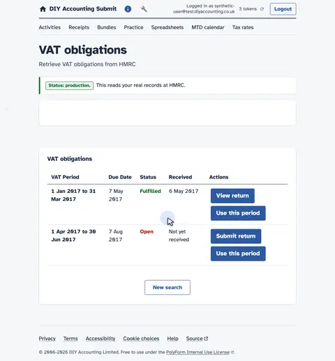
HMRC answers with every period it holds. An open period is still waiting for a return.
-
Start the return
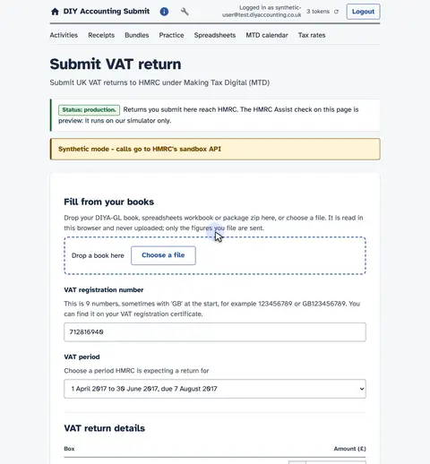
Start a return for that open period.
-
Box 1, VAT on sales
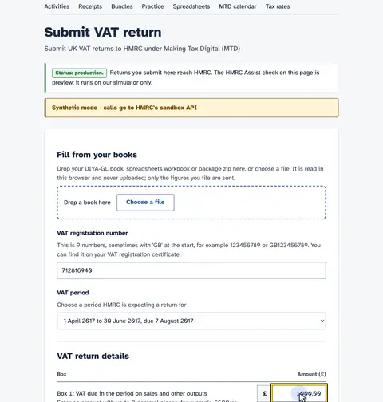
Box 1 is the VAT due on your sales.
-
Box 2, usually zero
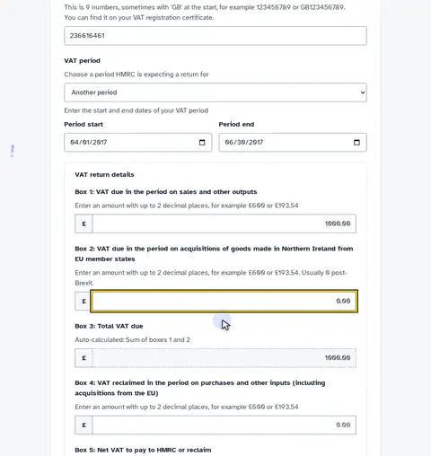
Box 2 is VAT on EU acquisitions, usually zero now.
-
Box 3 adds it up
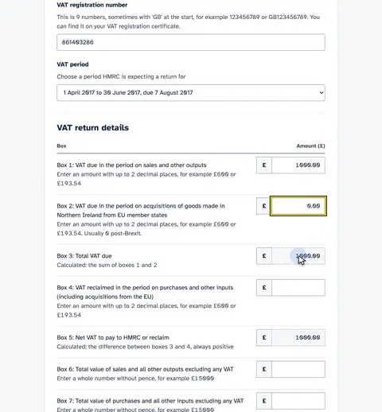
Box 3 adds boxes 1 and 2 for you.
-
Box 4, VAT reclaimed
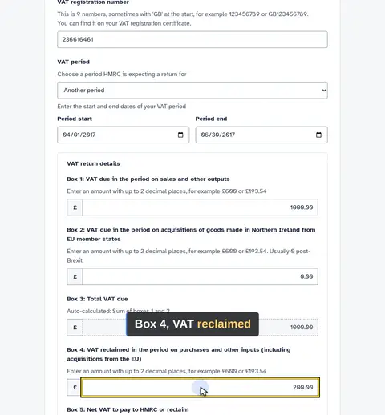
Box 4 is VAT you can reclaim on purchases.
-
Box 5, the net total
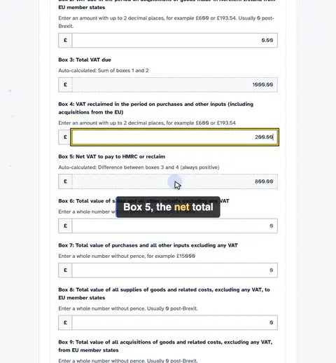
Box 5 works out what you owe overall.
-
Box 6, total sales
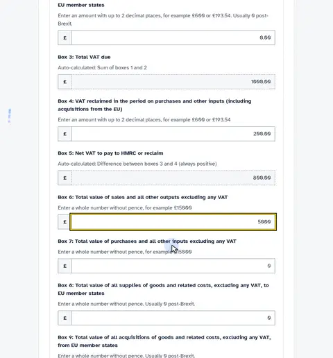
Box 6 is your total sales, without VAT.
-
Box 7, total purchases
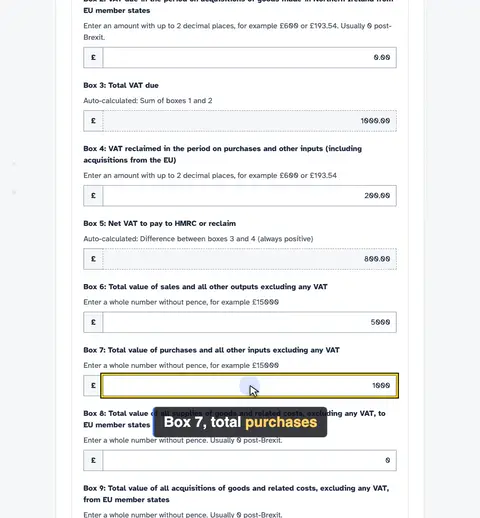
Box 7 is your total purchases, without VAT.
-
Boxes 8 and 9, EU trade
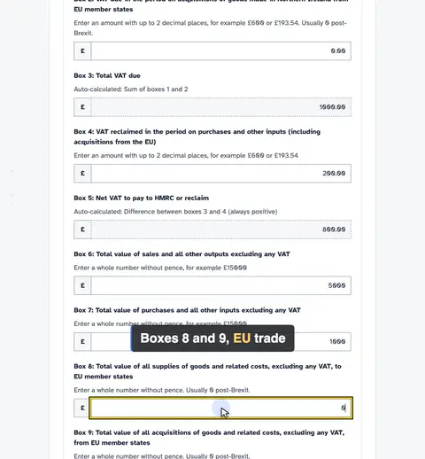
Boxes 8 and 9 cover EU trade, usually zero now.
-
Confirm the declaration
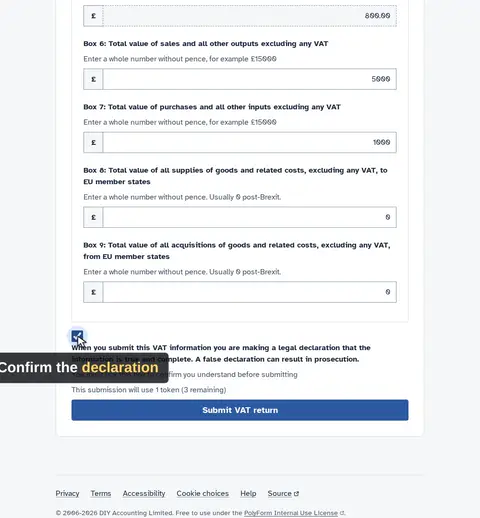
Tick the declaration to confirm the return is accurate.
-
Authorise again
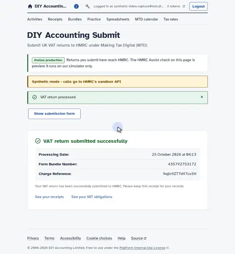
Submitting needs a wider grant, so HMRC asks once more. Sign in to HMRC and say yes again.
-
Submitted
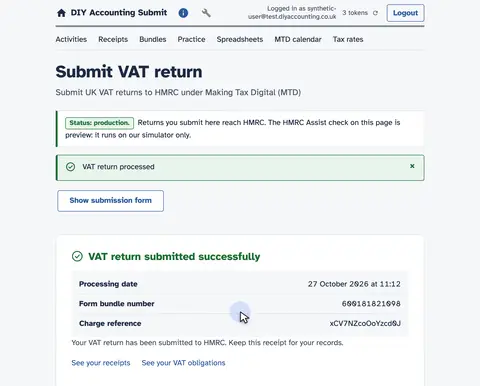
HMRC confirms the return is filed. The receipt is your record that it went through.
-
Read back what you filed
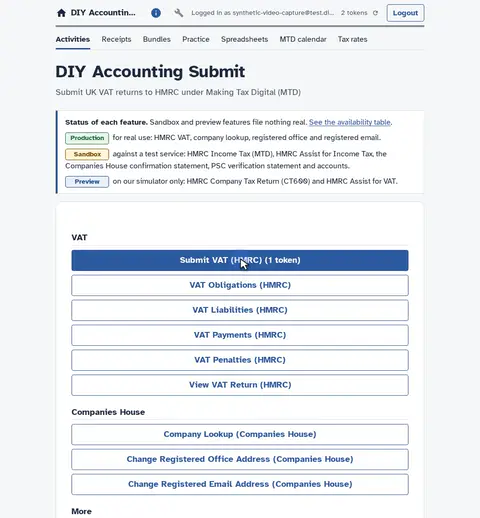
Back to the activities, to read the return you filed.
-
Open View VAT Return
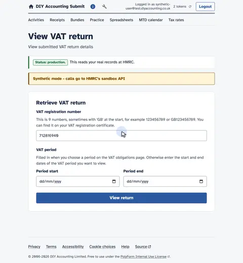
Open the return you have just sent.
-
Choose the period
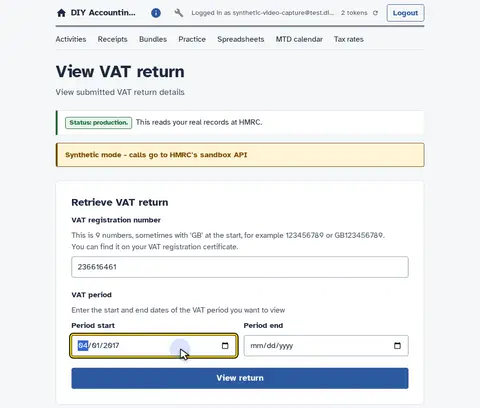
Then the period you filed.
-
Ask HMRC for the record
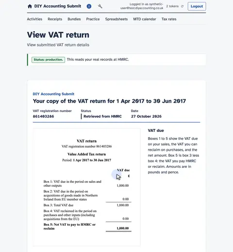
Ask HMRC for the return on file.
-
HMRC sends the record

HMRC sends back the return as it holds it.
-
Your record, as submitted
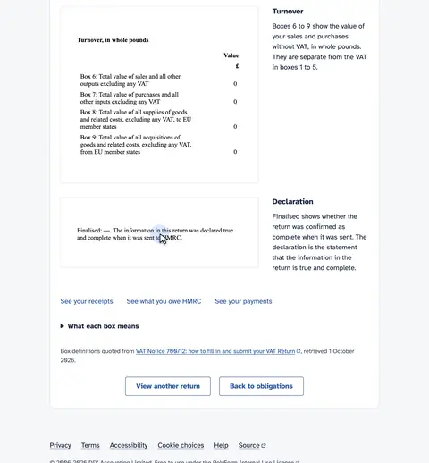
This is your record: the totals and the declaration, as submitted.
Watch the video: How to submit a VAT return under MTD.
Price
The Resident VAT bundle covers this filing and costs £9.99 a year or £0.99 a month.
The day pass is free and gives you 3 submissions to try it first.
When it is due
Every VAT-registered business sends its returns to HMRC through Making Tax Digital software.
Businesses need to have signed up to Making Tax Digital for their first VAT return starting on or after 1 April 2022.
See every date on the MTD calendar.
Ready to file
Other filings
- How to file micro-entity accounts at Companies House
- How to file small company accounts at Companies House
- How to file dormant company accounts at Companies House
- How to file a confirmation statement (CS01)
- MTD VAT bridging software compared by price
Each filing and the channels that offer it are in the availability table.